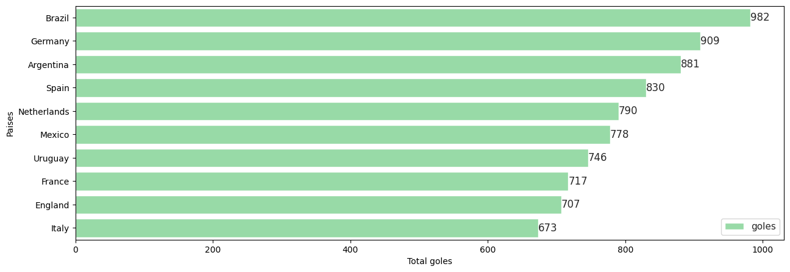
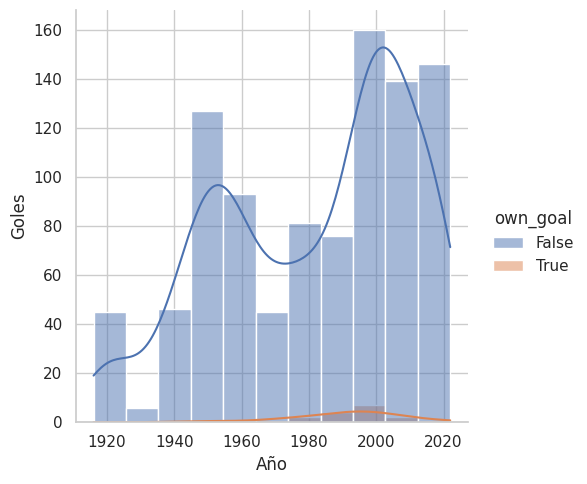
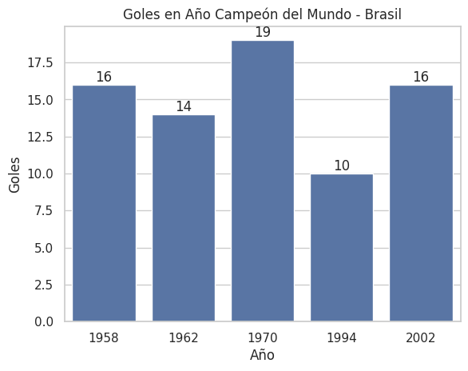
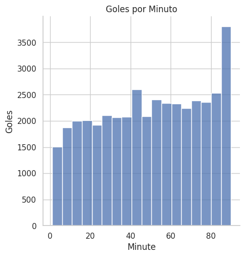

Este trabajo práctico tiene como objetivo explorar un dataset de datos de futbol de goles realizados en partidos desde el año 1916 hasta el año 2024.
Se busca poder visualizar el comportamiento de las principales selecciones goleadoras, y poder evaluar la información de los dos más grandes campeones mundiales Brasil y Alemania durante los años en que respectivamente quedaron campeones.
Nuestros datos contienen el tiempo en el que se genero cada anotación tambien vamos a usar esta información para poder inferir en que minutos existe la mayor posibilidad de generar goles en un partido.
Este trabajo busca verificar si la cantidad de goles influye directamente en ganar o no el campeonato mundial.
El primer gráfico nos muestra los 10 países con mayor cantidad de goles anotados. Nuestra lista es encabezada por Brasil con 982 goles, también es el país con mayor cantidad de campeonatos mundiales a la fecha. En segundo lugar tenemos a Alemania que en conjunto con Italia (decimo lugar) comparten el puesto 2 en el ranking de campeones mundiales. En tercer lugar tenemos a Argentina la ultima selección campeona del mundo en el año 2022 con 881 goles.
Es interesante observar que a pesar de que Brasil no ha sido campeona del mundo en los ultimos 20 años (5 mundiales) mantiene una notable diferencia de goles con respecto a la segunda posición de este ranking, lo cual remarca su constancia dentro de las competenecias a nivel mundial.
El comportamiento de goles anotados de la selección brasileña no ha sido constante durante todos los años, se eligió este gráfico para poder visualizar su comportamiento y poder observar si existe una relación entre los años en que la selección ha quedado campeona y los picos de goles marcados en nuestra visualización.
Años en los que Brasil ha sido campeón mundial: 1958, 1962, 1970, 1994 y 2002
Se puede observar que si existe una mayor cantidad de goles marcados en los años cercanos y posteriores, lo que indica que la selección estos años tuvo un mayor rendimiento lo que lo llevo al campeonato mundial. Sin embargo a pesar de que posterior al 2002 el rendimiento de brasil no ha decaido, considerando la cantidad de goles marcado, no ha logrado posicionarse como campeón.
Sin embargo este rendimiento en goles dentro de los ultimos año, se ve reflejado en las posiciones que ha mantenido dentro de los mundiales, en los cuales minimo ha marcado 8 goles y ha ingresado a disputar los cuartos de final, manteniendo posiciones entre 4 y 7 a nivel mundial dentro de esta competencia.
Con esta grafica se busca explorar a mayor detalle la estadisticas de los goles marcados durante los años de la copa del mundo para conocer la cantidad de goles requeridos por la selección para su campeonato mundial, y posteriormente compararemos esta información con Alemania que se encuentra en segundo lugar del ranking.
Mínimo Brasil anoto 10 goles por mundial ganado, el promedio de goles para los 5 campeonatos ronde en 15 goles por mundial, lo cual significa que Brazil anoto aproximadamente 2 goles por partido, considerando que en un mundial se juegan 7 partidos para poder quedar campeón. Ninguno de los goles anotados se genero por autogol.
En comparación a Brasil, Alemania tienes mas variación en la cantidad de goles, su promedio de anotaciones es de 20 goles por campeonato, 5 más que Brasil, el promedio por partido tambien aumenta a 2,85 goles, un gol mas en promedio que Brasil cada partido.
Sin embargo, Italia país que se encuentra en el 10 lugar de países goleadores, tiene la misma cantidad de campeonatos mundiales que Alemania. Por lo que la cantidad de anotaciones, a pesar que es necesaria para ganar un campeonato, el exito dentro de estas competiciones se rige en la estabilidad a lo largo de todos los partidos en los que se disputa.
El siguiente grafico tiene como objetivo realizar una representación de los minutos en los que se presenta la mayor probabilidad de gol en los partidos.
Es facil observar que la mayor probabilidad de goles se concentra al final del segundo tiempo a los 90 minutos de partido. Sin embargo es interesante observar, que aunque en menor medida, a los ultimos minutos del primer tiempo se genera un pico de cantidad de goles marcados.
Factores físicos como el cansancio o factores psicológicos como un aumento en la confianza de que el marcador no puede ser movido, o el efecto contrario un arranque de fuerzas para conseguir el tanto ganador, generan que la mayor probabilidad de un gol se centre el final de cada una de las mitades de un partido.